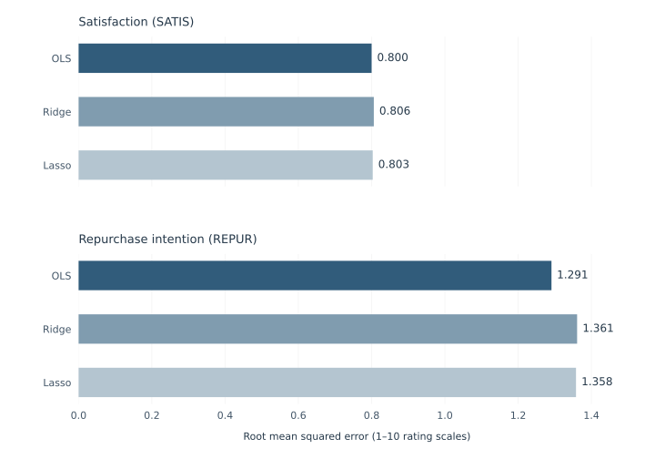
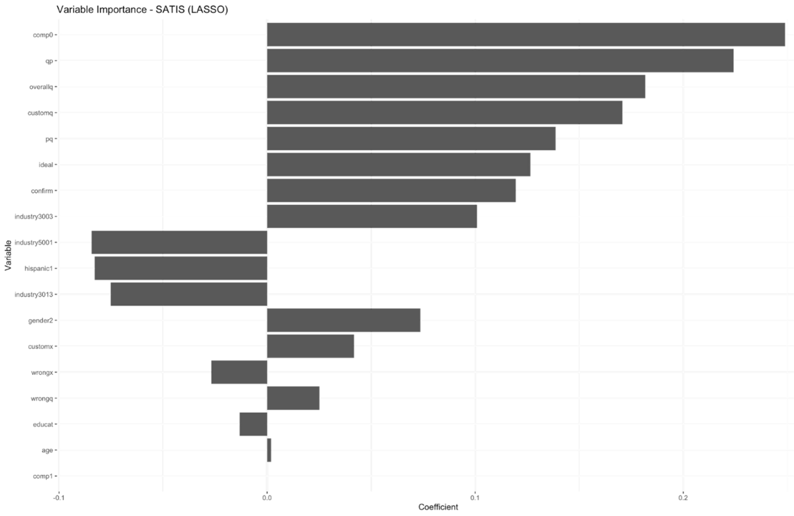
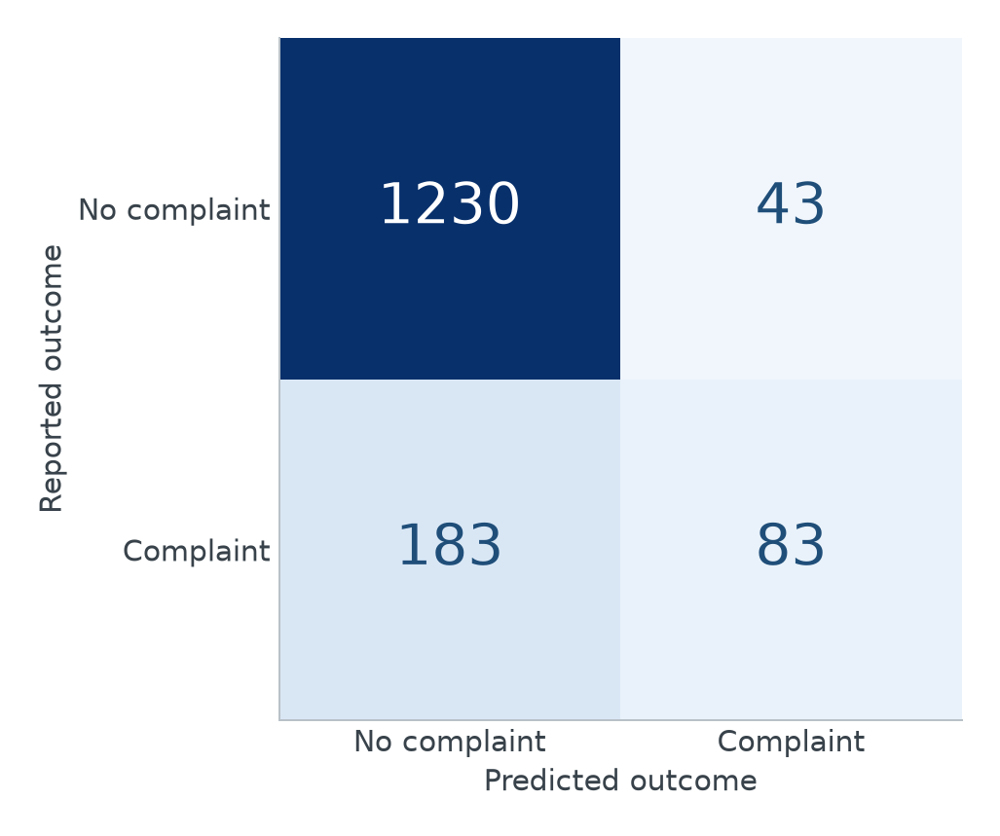
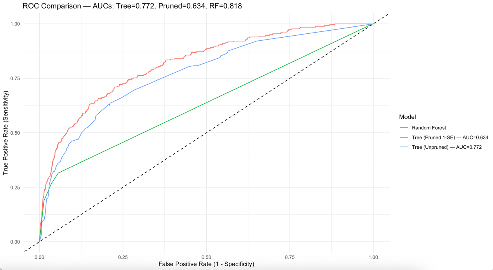
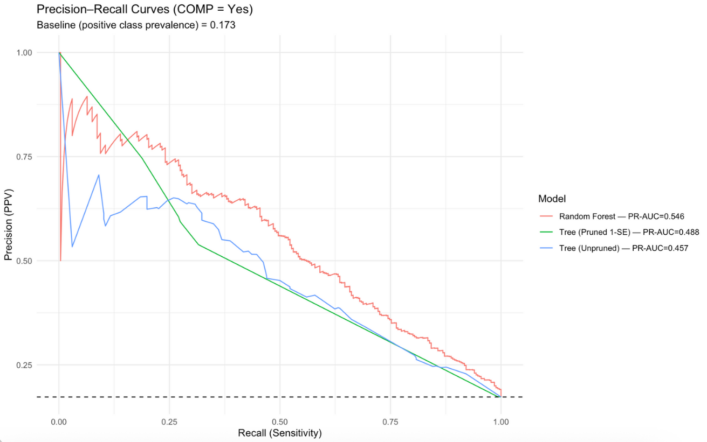

Beyond Satisfaction
Customer Experience, Repurchase Intentions, and Complaints
Satisfaction, willingness to buy again, and complaint behavior capture different aspects of customer experience. This analysis compares rating and classification models to examine how these responses relate to perceived quality, value, expectations, and reported problems.
Satisfaction, intention, and complaints
A favorable rating does not guarantee a future purchase, and the absence of a complaint does not establish satisfaction. This project models satisfaction and repurchase intention as separate rating outcomes and complaints as a binary outcome. Repurchase intention remains a stated attitude, rather than an observed transaction.
The three outcomes make different demands on a model. Satisfaction summarizes a current evaluation; repurchase intention concerns a prospective choice; a complaint records whether a particular response occurred. Comparing them avoids treating a good fit for a rating scale as evidence that the same model can identify the less frequent customers who report complaints.
The ACSI framework distinguishes expectations, perceived quality, and perceived value from satisfaction and its related outcomes (Fornell et al., 1996). This motivates analyzing three responses separately: satisfaction evaluates an experience, repurchase intention expresses a prospective judgment, and a complaint records a reported response to that experience. Their relationship is substantively meaningful even when they share predictors.
The survey design described by Morgeson et al. (2023) makes these distinctions observable through separate questions. Quality relative to price and price relative to quality are related evaluations, while confirmation of expectations and closeness to an ideal supply additional standards of comparison. Their conceptual overlap helps explain why the project compares ordinary regression with shrinkage methods.
Customer experience across four industries
The American Customer Satisfaction Index (ACSI) public research dataset, released by Forrest Morgeson and Tomas Hult, provides customer-level survey responses collected by ACSI in the United States. The 2015 release covers recent customers of processed-food companies, airlines, internet service providers, and banks. Its linked measures of expectations, quality, value, satisfaction, loyalty, and complaints make it suitable for comparing different dimensions of customer experience. The four industries are a selected sample, not the entire ACSI program.
Cleaning reduces 8,239 raw records to 7,700 customer records with 19 variables. Satisfaction (SATIS) is the individual 1–10 survey item, distinct from the full ACSI index; repurchase intention also uses a 1–10 scale. Duplicates and missing outcomes are removed, designated missing codes are recoded, and missing predictors are imputed. One completed dataset from five imputations is used for modeling, so imputation uncertainty is not pooled.
The quality and value measures are related but distinct. Customization asks how well a product or service meets personal requirements; reliability concerns things going wrong, with higher reliability ratings indicating fewer problems. QP evaluates quality given price, whereas PQ evaluates price given quality. These definitions matter when interpreting coefficient signs, particularly for variables whose abbreviated names could suggest the opposite direction.
Ratings are more predictable than purchase intentions
OLS provides a linear benchmark; ridge and Lasso shrink correlated coefficients. The penalized analyses use an 80/20 split and ten-fold cross-validation to choose penalties. Satisfaction and repurchase intention are excluded from one another’s predictor sets.
OLS has the strongest reported numerical fit: satisfaction RMSE is 0.800 for OLS, 0.806 for Ridge, and 0.803 for Lasso; repurchase-intention RMSE is 1.291, 1.361, and 1.358 respectively. Across all three models, satisfaction is more closely predicted than repurchase intention.

View full-size figure
{kind=link}
Ridge is selected in this project for stability under multicollinearity, even though OLS has the lowest reported RMSE. Lasso provides sparse selection and helps interpret which predictors retain information under shrinkage. These roles distinguish numerical fit from coefficient stability and interpretability.
Confirmation of expectations, proximity to an ideal product or service, quality, and value carry substantial information about satisfaction. These related evaluations are measured together; their predictive association does not establish a service-improvement effect.

View full-size figure
{kind=link}
Regularization addresses the overlap among these evaluations. Ridge distributes shrinkage across coefficients, while Lasso can set some to zero; a zero coefficient does not show that the underlying concept is irrelevant when another correlated measure retains its information. The wider repurchase errors indicate that the same survey measures capture intentions less completely than satisfaction. They do not identify which unmeasured influences account for the remaining error.
High accuracy can conceal missed complaints
Only about 17% of customers report a complaint. An unpruned tree, a pruned tree, and a class-weighted random forest are compared on this unevenly distributed outcome. At a 0.5 threshold, the forest achieves 85.3% accuracy but only 31.2% sensitivity, identifying fewer than one-third of complaints.
The tree models identify low repurchase intention together with poor value-for-money as a profile with elevated complaint incidence. A class-weighted forest gives complaints more weight during fitting, but the confusion matrix shows that weighting alone does not solve the missed-complaint problem. Most correctly classified records are non-complaints, which helps explain why overall accuracy looks favorable despite low sensitivity.

View full-size figure
{kind=link}
Changing the threshold trades missed complaints against false alarms. The ROC and precision–recall curves make this tradeoff visible across operating points.

View full-size figure
{kind=link}

View full-size figure
{kind=link}
How far do these predictive results travel?
Imputation before splitting can share information across training and evaluation records. Forest tuning also uses the test AUC later reported as performance. Both limit the independence of evaluation and can make results optimistic. An untouched final sample and preprocessing confined to training folds would provide a stronger comparison.
The two curve summaries also distinguish different kinds of improvement. Pruning lowers ROC area relative to the unpruned tree while slightly raising precision–recall area. There is no single ordering that makes pruning better or worse on every criterion. The forest has the largest area on both curves, yet its selected threshold still leaves many complaints undetected.
Related evaluations, different behavioral uncertainty
Customer ratings share strong predictive information, while complaint detection remains difficult at the evaluated threshold. A useful model therefore depends on which outcome matters and on the relative cost of missed complaints and false alarms. Neither the rating associations nor the classification results identify what would happen after changing a service policy.
A practical interpretation must therefore specify the intended decision. A model used to prioritize a limited number of follow-ups emphasizes precision, while one intended to find more dissatisfied complainants emphasizes recall. Choosing that tradeoff would require explicit costs and fresh validation. The present results describe the available prediction tradeoffs rather than demonstrating that a particular outreach or service intervention works.
Complaint behavior also has a relationship with loyalty that cannot be reduced to satisfaction alone. Morgeson et al. (2020) examine how complaint handling conditions the complaint–loyalty relationship. This motivates considering service recovery in further research; the present complaint classifiers identify observed response patterns and do not estimate the effect of improving complaint handling.
References
Fornell, C., Johnson, M. D., Anderson, E. W., Cha, J., & Bryant, B. E. (1996). The American Customer Satisfaction Index: Nature, purpose, and findings. Journal of Marketing, 60(4), 7–18.
Morgeson, F. V., III, Hult, G. T. M., Mithas, S., Keiningham, T., & Fornell, C. (2020). Turning complaining customers into loyal customers: Moderators of the complaint handling–customer loyalty relationship. Journal of Marketing, 84(5), 79–99. https://doi.org/10.1177/0022242920929029
Morgeson, F. V., III, Hult, G. T. M., Sharma, U., & Fornell, C. (2023). The American Customer Satisfaction Index (ACSI): A sample dataset and description. Data in Brief, 48, 109123. https://doi.org/10.1016/j.dib.2023.109123